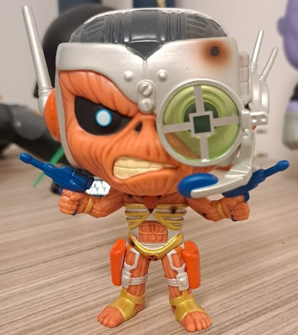
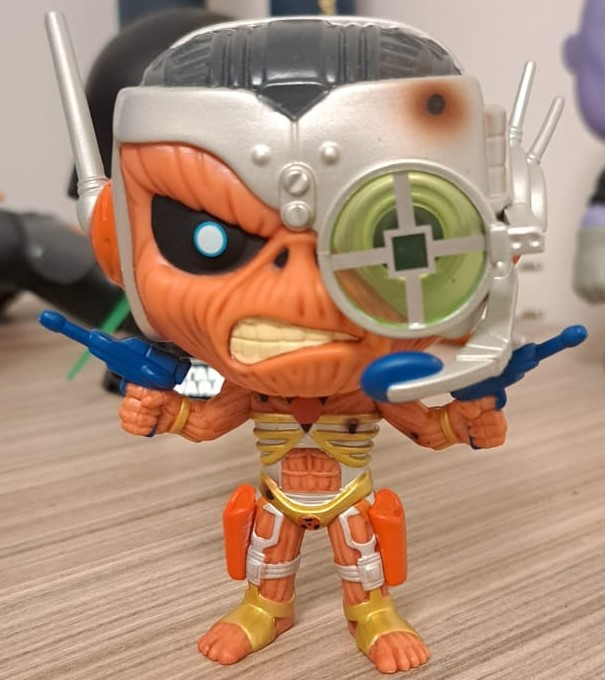

Batman que Ri (Vilão da primeira saga da minha coleção de hqs)
Mimikyu (Meu pokemon favorito)
Yoda Fantasma (Meu 1º Funko)

Eddie Ciborgue (Meu 100º Funko)


Motoqueiro Fantasma Cósmico (Meu herói favorito)